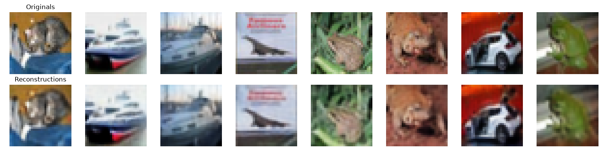

Autoencoders: Teaching Neural Networks to Compress
Trained seven residual convolutional autoencoders on CIFAR-10 to map the tradeoff between compression and reconstruction quality. A 512-value latent reached 30.02 dB PSNR at a 6x reduction in representation size.